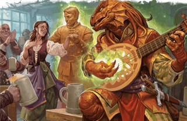
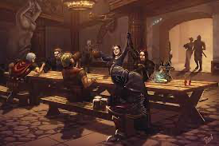

DragonMasters
Guide PlanningDuring a session, most scenarios will fall under one of two things: roleplay or combat. Roleplay is when the player acts, talks, and interactes as their character. They will have to converse with NPC's, sneak around or any number of things as they think their character would. Combat is when players have to fight and scare away or slay ememies from bandits to dragons. Combat is a lot more structured with each creature taking turns one at a time taking actions. Both are detailed more below as well as information on how to most effectively plan them out.
Roleplaying can be difficult for a DM to work with. They have to act as all NPC's in the scene, whether that's a pub or a church. When planning out or setting up for roleplaying scenes, it is best to have a list of all people in the room, which ones the players can interact with, and what each one knows or can say. Some of the NPC's can just have casual conversations about personal things, while others can give information to help the party move forward in their quest. Having all this written down is highly recommended. It is also recommended to do a little voice acting for different characters, to help players feel more immersed and connect with NPC's. Just like real life, these NPC's should have sound different and have different demeanors. It will take a bit of planning, but it will make a world of a difference to have all of this planned out!
Combat can be the hardest to track. Players have to keep track of their characters health, abilities and moves, while the DM has to keep track of everything else. They will determine what actions enemies will take and their health as well. The planning page can help keep track of those types of things in an organized manner, but it still takes planning to set up a good encounter. The first thing is to understand the point of the encounter. Is it just to introduce the characters to enemies, or to challenge the characters ingenuity and push them to the brink? It is very important to balance the strength of the enemies with the strength of the party. Easier encounters over and over will quickly bore the party, but is useful for introducing enemies. An example of this would be like the party stumbles upon a lone scout separated from the army. It will be easy for the party to overwhelm him and potentially learn information about the enemies plans and goals. A hard encounter can be good to help characters gain experience and level up, unlocking more powerful abilites that will be used to beat the final boss or bosses. As said previously, with help planning out and tracking this information, the planning page will have almost everything needed to make sure you as a DM can plan out an excellent combat encounter!
It is very important for players to be able to feel like they can actually have an effect on how things play out. While it is good to stick to a preset plan, don't be afraid to let other things happen. If you have a combat encounter planned out but your players are able to convice the enemies to stand down and talk, let them! If the players are rude to a barkeep. have a small bar-brawl fistfight break out between bouncers and the party! That can be the funnest things to happen during a session, and as the DM, you are in charge of making sure the session is fun!